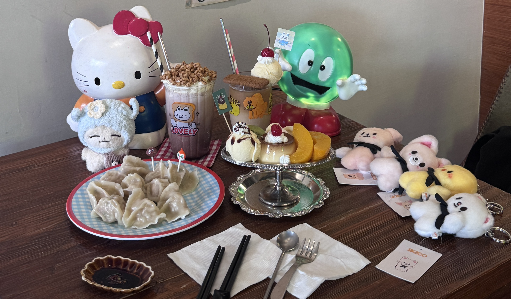

基本資料
姓名：鄭嘉怡
出生年月日：2005/05/11
性別：女
Gmail：44881234kj@gmail.com
靜宜大學 資科二A 411205138
姓名：鄭嘉怡
出生年月日：2005/05/11
性別：女
Gmail：44881234kj@gmail.com
* 追星
* 畫畫
我出生於一個和樂的家庭，父母從小教導我獨立與負責任的重要性。 我從小對科技充滿興趣，所以對電腦與程式設計產生濃厚好奇心， 在成長過程中，他們不會干涉我的選擇，促使我在升學時選擇了資科系。
目前就讀於資科系，我修習過多門專業課程，包括：
* 微積分、線性代數、機率論
* Python、R 語言、Java 程式設計
* 資料探勘、統計
這些課程讓我累積了處理與分析資料的基本能力，
並打下進一步深入數據領域的基礎。
在學期間，我曾於微醺小夕陽擔任櫃台、收銀、內、外場。 這段經驗讓我學習到收班時需查看報表並分析和統計營業額。 此外，我也在高美手扒雞工作，雖然與數據分析領域不同， 但這段經歷讓我學會如何高效處理問題、與不同背景的人溝通、團隊合作的重要性。
短期內，我希望透過在校學學習、競賽累積更多數據分析的經驗， 並進一步精通 Python、R，提升自己的技術能力。 長期而言，我希望能成為一名商業數據分析師， 並運用數據分析技術幫助企業或社會解決實際問題。 例如，在金融、行銷或醫療等領域中，透過大數據分析來優化決策、提升效率。 此外，數據領域發展迅速，我會持續學習新技術，與時俱進， 讓自己在職場上保持競爭力。
from selenium import webdriver
from selenium.webdriver.chrome.service import Service
from webdriver_manager.chrome import ChromeDriverManager
from selenium.webdriver.common.by import By
from selenium.webdriver.common.keys import Keys
import time
from selenium.webdriver.support.ui import WebDriverWait
from selenium.webdriver.support import expected_conditions as EC
from selenium.common.exceptions import NoSuchElementException, ElementNotInteractableException
# 定義抓取一頁資料的函數：從 ETtoday 新聞列表抓取標題與連結
def get_ettoday_news_list_headlines():
options = webdriver.ChromeOptions()
options.add_argument("--disable-blink-features=AutomationControlled"))
# 啟動瀏覽器
driver = webdriver.Chrome(
service=webdriver.chrome.service.Service(ChromeDriverManager().install()),
options=options
try:
# 開啟 ETtoday 新聞列表頁面
driver.get("https://www.ettoday.net/news/news-list.htm")
WebDriverWait(driver, 10).until(
EC.presence_of_element_located((By.CLASS_NAME, "part_list_2"))
)
# 模擬滾動頁面（可載入更多新聞）
for _ in range(2):
driver.execute_script("window.scrollTo(0, document.body.scrollHeight);")
time.sleep(5)
# 抓取新聞項目（h3 標題裡的超連結）
news_items = driver.find_elements(By.CSS_SELECTOR, ".part_list_2 h3 a")
# 只取前 10 則新聞，印出標題與連結
for item in news_items[:10]:
print(item.text, item.get_attribute("href"))
finally:
#關閉瀏覽器
driver.quit()
# 如果這支檔案是直接執行，就執行主函式
if __name__ == "__main__":
get_ettoday_news_list_headlines()